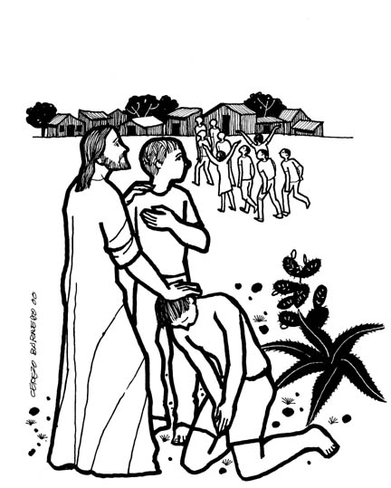

This Week: Jeremiah 29:1, 4-7 and Psalm 66:1-12 or 2 Kings 5:1-3, 7-15c and Psalm 111, 2 Timothy 2:8-15, Luke 17:11-19
Misioneros Del Sagrado Corazón en el Perú
This Week: Jeremiah 29:1, 4-7 and Psalm 66:1-12 or 2 Kings 5:1-3, 7-15c and Psalm 111, 2 Timothy 2:8-15, Luke 17:11-19

Cerezo Barredo's weekly gospel illustrations
Next week: Jeremiah 31:27-34 and Psalm 119:97-104 or Genesis 32:22-31 and Psalm 121, 2 Timothy 3:14-4:5, Luke 18:1-8